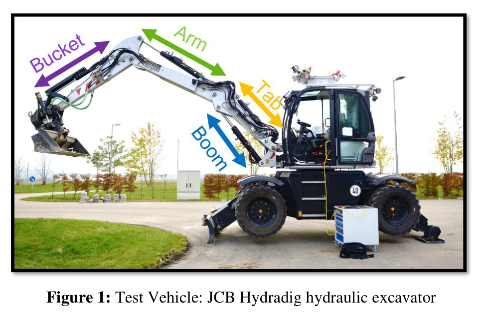
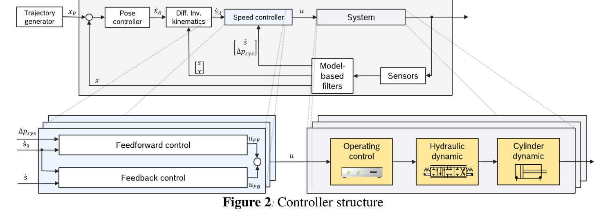
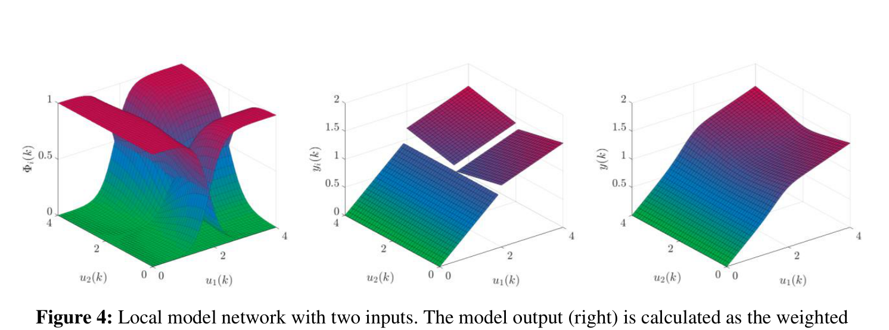
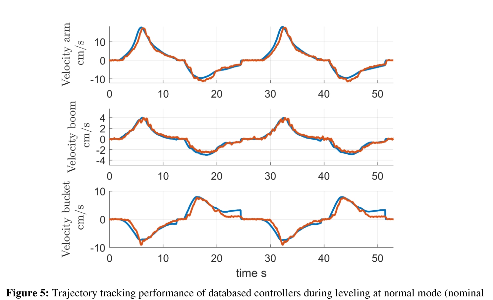
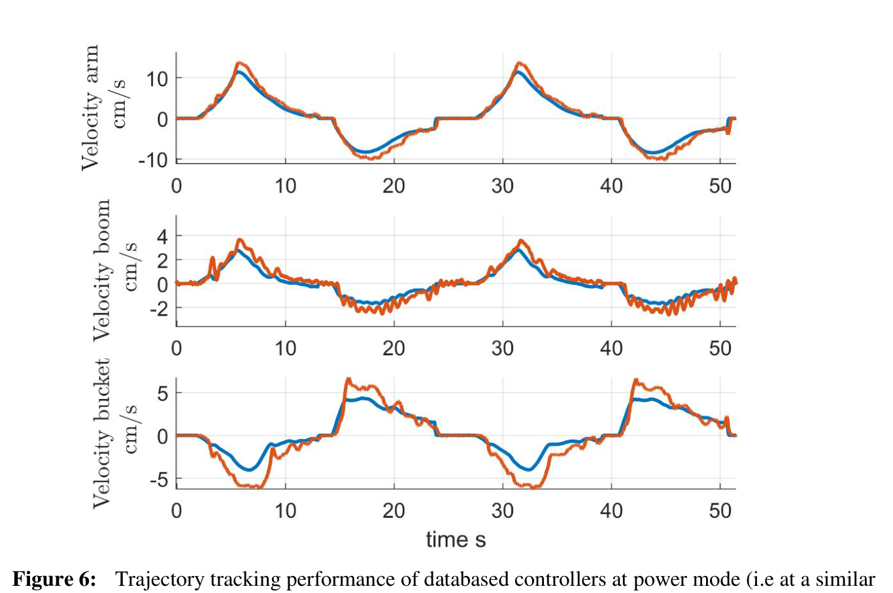
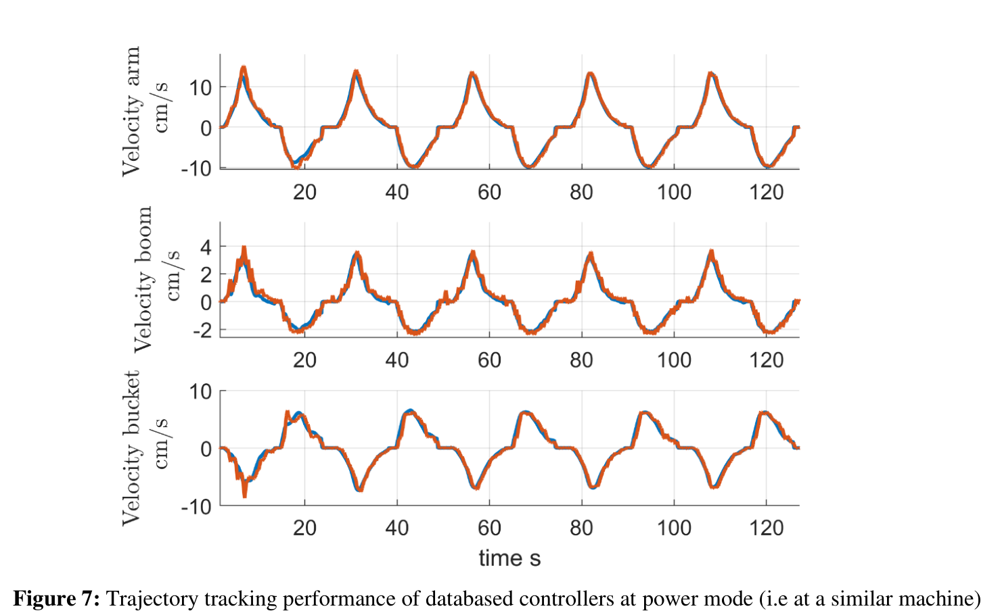
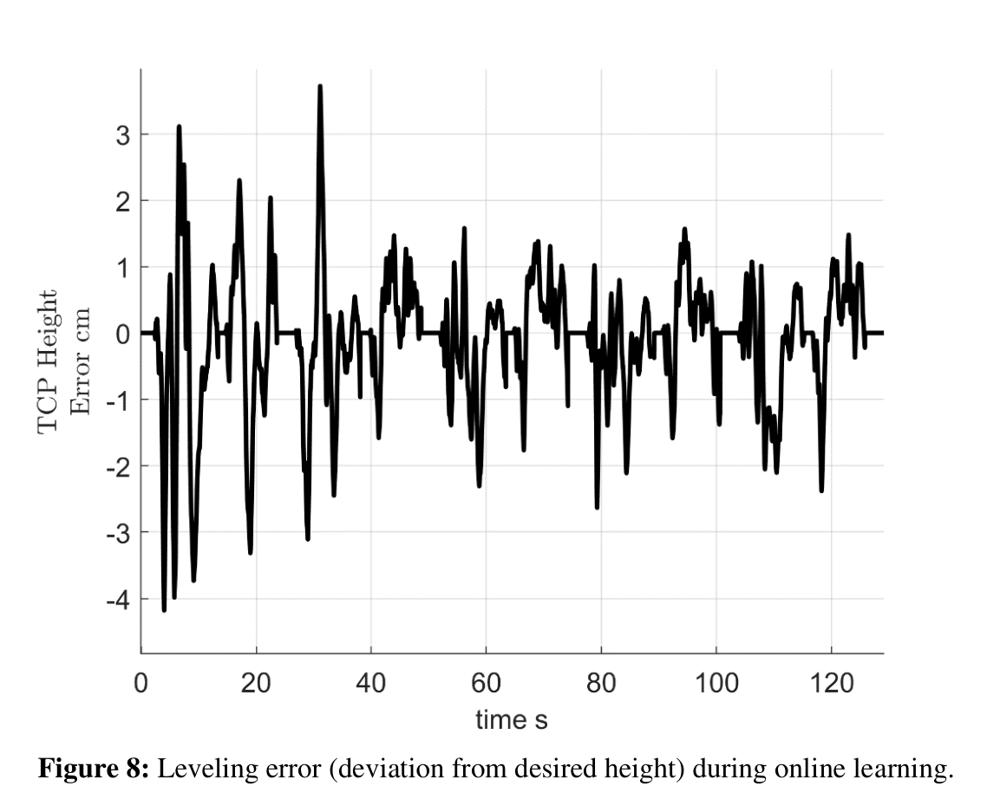

Hydraulics × Online Learning
굴착기는
현장에서 배운다구조는 미리, 보정은 실시간으로
기체마다 달라지는 유압 특성에 제어기는 어떻게 적응할 수 있을까. Bosch 연구진은 비선형 모델의 구조를 미리 학습하고, 실차에서는 작은 선형 모델의 가중치만 갱신했다. 국소 모델 네트워크가 보여주는 실용적인 학습의 분업이다.
ABSTRACT / 연구 개요
이 연구는 JCB Hydradig 굴착기의 붐·암·버킷 실린더에 대해, 목표 운동과 유압 상태로부터 조이스틱 신호를 계산하는 역모델 기반 피드포워드 제어기를 다룬다. 국소 모델 네트워크(LoMoNet)의 입력 공간 분할은 기준 기체인 ‘골든 샘플’의 데이터로 오프라인 학습하고, 국소 선형 모델의 가중치는 실차에서 재귀 최소제곱(RLS)으로 갱신한다. 파워 모드 전환으로 특성이 달라진 조건에서도 오차가 감소했고, 온라인 학습 중 평탄화 높이 오차는 3 cm 미만으로 보고됐다. 다만 저부하 작업의 결과이므로 고부하 굴착과 장기 운용으로의 확장은 별도 검증이 필요하다.
핵심은 모델의 크기보다
무엇을 현장에서 배울지에 있다
-
비선형 구조와 선형 가중치를 나눠 학습한다.
영역을 나누는 복잡한 작업은 오프라인에서 끝낸다. 현장에서는 고정된 영역 안의 선형 모델만 갱신해 연산과 메모리 부담을 낮춘다.
-
특성이 바뀐 조건에서 적응 효과를 확인했다.
엔진 회전수와 조이스틱–유량 특성이 달라지는 파워 모드에서, 붐의 RMSE는 6.52%에서 1.99%로 감소했다. 여러 실제 기체 간 전이를 직접 입증한 실험과는 구분해야 한다.
-
현장 적용의 다음 과제는 학습 데이터의 선택이다.
반복적인 평탄화 작업에 적응하는 것은 유리하지만, 자극이 부족하거나 오염된 운전 데이터를 계속 학습해도 안정적인지는 남은 문제다.
기체마다 다시 튜닝하는 비용
평탄화와 경사 작업을 돕는 굴착기 보조 기능은 버킷 끝점이 목표 경로를 정확히 따라가야 한다. 그러나 기구와 유압 시스템의 비선형성이 크고, 기체의 생산 편차나 노화에 따라 제어 특성도 달라진다. 다품종 소량 생산 환경에서 기체마다 정교한 물리 모델을 만드는 일은 비용 부담이 크다.
데이터 기반 모델은 이 부담을 줄일 수 있다. 이 연구가 집중하는 지점은 한 번 학습한 제어기를 현장에서 어떻게 적응시킬 것인가다. 임베디드 제어 유닛에서 실행 가능한 온라인 적응 구조를 만들고, 실차 보조 작업에서 그 효과를 확인한다.

끝점 경로에서 조이스틱 신호까지
최적화 기반 미분 역기구학이 버킷 끝점의 목표 운동을 관절 좌표로 변환한다. 학습된 피드포워드와 피드백 제어기는 이를 바탕으로 조이스틱 신호를 만든다. 기구학은 이미 알고 있다고 가정하며 학습 대상에서 제외한다.

| 제어 입력 | 수정된 조이스틱 신호(%). 기체 소프트웨어는 수정하지 않음. |
|---|---|
| 시험 하드웨어 | dSpace MicroAutoBox II |
| 구현 도구 | Matlab/Simulink 코드 생성 |
| 학습 대상 | 실린더 운동·유압 상태에서 조이스틱 신호로 가는 역모델 |
| 기구학 | 사전에 알려진 모델을 사용 |
작은 선형 모델을 섞어
비선형을 표현한다
국소 모델 네트워크는 입력 공간의 각 영역에 작은 선형 모델을 놓는다. 현재 입력이 어느 영역에 가까운지에 따라 모델별 가중치를 정하고, 이들의 출력을 부드럽게 합친다. 각 모델은 단순하지만 전체 네트워크는 비선형 관계를 표현할 수 있다.
= ∑i=1…M (wi0 + ∑j=1…nₓ wijxj) Φi(z) (1)
Φi(z) = μi(z) / ∑k=1…M μk(z), ∑i Φi = 1 (3, 4)
출력은 ‘국소 선형 모델 × 해당 영역의 유효성’의 합이다. 유효성 함수는 정규화되므로 모든 모델의 혼합 비중을 더하면 1이 된다.
| 기호 | 역할 |
|---|---|
| ŷi, wi | 국소 선형 모델과 그 오프셋·기울기. 온라인 갱신 대상. |
| Φi(z) | 현재 입력에서 각 모델이 얼마나 기여하는지 정하는 유효성 함수. |
| x / z | 선형 모델에 쓰는 입력 / 영역 분할에 쓰는 입력. 지연 입력을 사용한다면 x에만 포함. |
| cij, σij | 국소 모델의 중심과 폭. LoLiMoT의 축 직교 분할로 결정. |
| M / 매끄러움 | 모델 수와 혼합의 매끄러움을 정하는 두 하이퍼파라미터. 매끄러운 혼합은 유효 파라미터 수를 줄이는 암묵적 정규화로 작용. |

영역을 나누는 일은 미리 끝내고,
현장에서는 각 영역의 선형 모델을 고친다.
오프라인과 온라인의 역할 분담
구조를 학습한다
골든 샘플 기체의 데이터로 LoLiMoT를 실행해 입력 공간을 분할하고, 선형 가중치의 초기값도 구한다.
결정할 것: 중심 c, 폭 σ, 초기 가중치 w가중치를 적응시킨다
유사 기체에 구조를 이식한 뒤, 예측 오차를 이용해 재귀 최소제곱으로 국소 선형 가중치를 갱신한다.
유지할 것: 분할 구조 / 갱신할 것: w분할은 비선형 최적화가 필요하지만, 분할을 고정한 뒤의 가중치 추정에는 최소제곱과 재귀 최소제곱을 적용할 수 있다. 메모리와 연산 부담을 낮출 수 있는 이유다. 분할 자체는 물리 지식으로 직접 정하는 것도 가능하다.
제공된 요약은 LoMoNet의 성능이 GP·MLP와 유사했다고 설명한다. 다만 이 글에 정리된 수치만으로 모델 계열 전반의 우열까지 판단할 수는 없다.
특성이 달라지면,
온라인 적응이 차이를 만든다
학습 데이터와 실린더별 입력
학습에는 단일·복수 실린더에 다중 사인과 진폭 변조 의사 무작위 이진 신호(APRBS)를 가한 데이터를 사용했다. 이는 논문의 선행 연구 [4]에서 가져온 데이터다. 검증은 부하가 작고 반복성이 높은 평탄화·경사 작업을 대상으로 했다.
| 실린더 | 입력 특징 | 모델 수 | 매끄러움 |
|---|---|---|---|
| 붐 | 속도, 가속도, Δpsys | 110 | 1.5 |
| 암 | 속도, 가속도 | 90 | 1.2 |
| 버킷 | 속도, Δpsys | 51 | 1.2 |
Δpsys = 펌프 압력 − 로드센싱(LS) 압력. 모든 실린더가 동일한 입력 특징을 쓰는 것은 아니다.
파워 모드로 만든 특성 변화
모델의 초기 학습은 일반 모드에서만 수행했다. 이후 엔진 회전수와 조이스틱 신호에서 유량으로 이어지는 특성이 달라지는 파워 모드로 전환했다. 같은 기체 안에서 ‘비슷하지만 다른 기체’를 모사한 시험이다.
| 실린더 | 온라인 적응 | 일반 모드 | 파워 모드 |
|---|---|---|---|
| 붐 | 없음 | 4.03 / 0.974 | 6.52 / 0.861 |
| 붐 | 적용 | 2.14 / 0.992 | 1.99 / 0.987 |
| 암 | 없음 | 4.83 / 0.983 | 5.84 / 0.952 |
| 암 | 적용 | 1.87 / 0.997 | 2.08 / 0.994 |
| 버킷 | 없음 | 4.29 / 0.973 | 4.62 / 0.948 |
| 버킷 | 적용 | 1.36 / 0.997 | 3.21 / 0.975 |
수치는 제공된 요약 노트의 성능표를 옮겼다. RMSE의 정규화 기준은 노트에 명시되어 있지 않으며, 이 백분율을 끝점 높이 오차와 동일한 지표로 읽어서는 안 된다.
온라인 적응은 파워 모드뿐 아니라 일반 모드에서도 오차를 줄였다. 이는 초기 모델이 반복적인 실제 작업에 더 잘 맞도록 바뀌었음을 보여준다. 동시에 특정 작업에 대한 적응과 더 넓은 운전 영역의 일반화는 별개의 평가 대상이라는 점도 드러낸다.
실차에서는 무엇이 달라졌나
다음 실험은 피드백을 끄고 피드포워드만 비교한다. 따라서 전체 제어기의 피드백 보정 효과와 구분해, 학습된 역모델과 온라인 적응의 영향을 살펴볼 수 있다.




잘 배울 수 있는 조건도
제어 설계의 일부다
이 연구는 온라인 적응의 가능성을 실차에서 보여준다. 실제 운용 범위를 넓히려면, 다음 경계를 함께 다뤄야 한다.
- 학습에 적합하지 않은 데이터. 자극이 부족하거나 오염된 운전 데이터에 대한 강인성은 후속 과제다. 상시 학습을 하려면 어떤 데이터를 갱신에 사용할지 판단하는 기능이 필요하다.
- 저부하 작업 중심의 검증. 평탄화·경사 작업의 결과를 고부하 굴착으로 그대로 확장할 수 없다. 부하 변화와 압력 특징을 포함한 추가 검증이 필요하다.
- 실제 기체 간 전이의 범위. 파워 모드 전환은 경제적인 특성 변화 시험이지만, 여러 기체의 생산 편차나 장기 노화를 직접 검증한 것과 같지는 않다.
- 역모델에 집중된 학습. 제어기 설계에 활용할 순방향 모델의 학습은 아직 포함되지 않았다.
- 작업 특화와 일반화. 평탄화에 적응한 뒤에도 다른 작업 영역의 성능이 유지되는지 별도로 평가해야 한다.
HR35에서는 무엇부터 확인할까
HR35 관점에서는 골든 샘플의 역할을 디지털 트윈 데이터로 일부 대체하는 구상을 생각할 수 있다. 트윈에서 비선형 분할을 만들고, 실차에서 선형 가중치를 맞추는 방식이다. 다만 골든 샘플과 트윈이 동등하다는 것은 이 논문이 입증한 결과가 아니다. 실차 시험 시간을 줄일 수 있을지는 데이터의 대표성과 전이 성능으로 확인해야 한다.
- 트윈의 분할이 실차 운전 영역을 덮는가 노트의 ‘축 E’ 후보로 검토하되, 트윈과 실차의 입력 범위 및 유압 특성 차이를 먼저 확인한다. 고정된 분할 안에서 가중치 갱신만으로 보정 가능한지도 평가한다.
- 펌프 압력과 LS 압력을 읽을 수 있는가 Δpsys를 구성할 센서 채널과 로드센싱 마진의 관측 가능성을 실차 자료에서 확인한다.
- 단일·복수 실린더 자극을 어떻게 설계할 것인가 다중 사인과 APRBS를 ‘축 G’의 자극 후보에 넣는다. 노트에서 언급한 램프·처프 자극과 함께 시험 목적에 맞게 비교한다.
- 엔진 모드 전환으로 민감도를 시험할 수 있는가 모드 변경 전후의 적응 없는 성능과 적응 후 성능을 비교한다. 트윈–실차 차이에 대한 민감도를 탐색하는 시험으로 활용할 수 있다.
- 부하가 커져도 같은 입력으로 충분한가 저부하 보조 작업과 고부하 굴착을 나눠 검증한다. 굴착 조건에서는 압력 입력의 확장이 필요한지 살펴본다.
현장에서 바꿀 부분을 작게 만든다
이 연구의 설계 원칙은 명료하다. 비선형성을 표현하는 구조는 충분한 데이터와 시간을 쓸 수 있는 오프라인 단계에서 만들고, 기체의 현재 특성에 맞추는 일은 가벼운 온라인 갱신에 맡긴다. 이 분업은 데이터 기반 제어를 실차의 계산 자원 안으로 가져오는 한 가지 방법이다.
다음 단계의 질문은 오차를 더 줄이는 데서 끝나지 않는다. 언제 학습하고, 어떤 데이터를 믿으며, 어디까지 성능이 유지되는가. 이 조건까지 확인할 때 온라인 적응은 반복 실험의 성과를 넘어 운용 가능한 보조 기능으로 이어질 수 있다.
출처와 해석 범위
Online Learning of Cylinder Velocity Controllers for Excavator Assistance Functions Using Local Model Networks
Ozan Demir, Benjamin Hartmann, Naresh Mandipalli, Frank Bender, Benjamin Ehlers, Michael Mehren
Robert Bosch GmbH · Bosch Rexroth AG
River Publishers 학회 논문집 장(章), 2024
DOI: 10.13052/rp-9788770042222c50
- 이 글은 제공된 Obsidian 요약 노트를 편집·재구성한 연구 해설이다. 원문을 독립적으로 재검증한 리뷰는 아니며, 표의 수치와 실험 설명은 해당 노트에 근거한다.
- 그림 1·2·4·5·6·7·8은 노트에 첨부된 논문 도판을 사용했다. 그림·수식 번호는 원문 번호를 유지했으며, 캡션은 한국어로 정리했다. 원 도판의 권리는 해당 권리자에게 있다.
- RMSE(%)와 R²는 노트에 기재된 값을 유지했다. 높이 오차(cm)는 별도 작업 성능 지표다. 오차의 상세 정의·정규화 기준과 시험 조건은 원문에서 확인해야 한다.
- ‘선행 연구 [4]’는 원 논문의 참고문헌 번호다. 노트의 HR35 의견에 등장하는 ETH 2026, Casoli 2015, Egli, Nan 2024, Taheri 2022는 상세 서지정보가 제공되지 않아 이 글의 검증 근거로 사용하지 않았다.
- HR35의 트윈 활용, 센서 확인 및 시험 제안은 노트 작성자의 적용 관점을 바탕으로 정리한 가설이다. ‘축 E’와 ‘축 G’는 해당 노트의 내부 분류를 유지한 표현이다.